Công Ty TNHH Sofa Việt Ý với hơn 8 năm kinh nghiệm trong
lĩnh vực thi công đóng ghế sofa và
bọc
ghế sofa với tiêu chí như: Chất lượng là trên hết, phục vụ thi công tại nhà khách hàng, giá
cạnh
tranh nhất thị trường, chất liệu thi công là hàng nhập khẩu, cao cấp, uy tín và chuyên
nghiệp.
Bọc Ghế Sofa Tại Nhà Khách Hàng
Bọc lại da - nệm - vải - Simily cao cấp cho ghế sofa tại nhà khách hàng với giá
siêu tiết kiệm, chất lượng và nhanh chóng.
Bọc Ghế Sofa Tại Nhà Khách Hàng
Bọc lại da - nệm - vải - Simily cao cấp cho ghế sofa tại nhà khách hàng với giá
siêu tiết kiệm, chất lượng và nhanh chóng.
Bọc Ghế Sofa Tại Nhà Khách Hàng
Bọc lại da - nệm - vải - Simily cao cấp cho ghế sofa tại nhà khách hàng với giá
siêu tiết kiệm, chất lượng và nhanh chóng.
Ghế sofa sau khi sử dụng 1 thời gian sẽ có
rất nhiều dấu
diệu cho thấy nó
đã
bị xuống cấp và cần thay thế hoặc bọc lại cũng như sửa chữa.
Sau đây là một số lợi ích mà chúng ta lựa chọn giải pháp bọc lại ghế sofa.
01
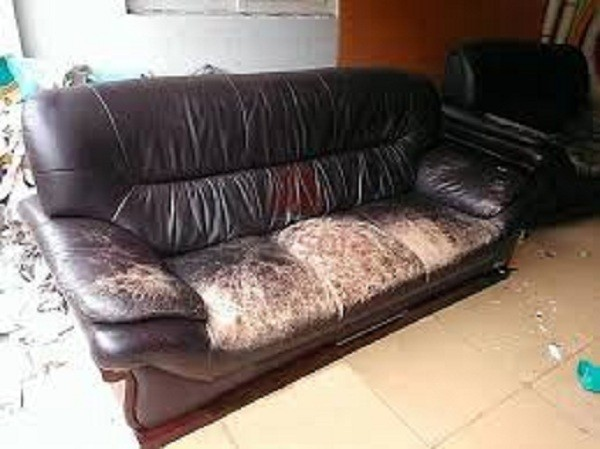
Tiết Kiệm Chi Phí
Ghế sofa được bọc bằng nệm hoặc lò xo sau khi sử dụng một thời gian sẽ bị tình trạng
xẹp
hoặc lún, mang lại cảm giác khá là khó chịu khi ngồi hoặc nằm...
Giải pháp phù hợp nhất trong trường hợp này là chúng ta cần phục hồi lò xo (Đối với
sofa
có lò xo) và bọc lại nệm cho bộ ghế sofa đó.
02
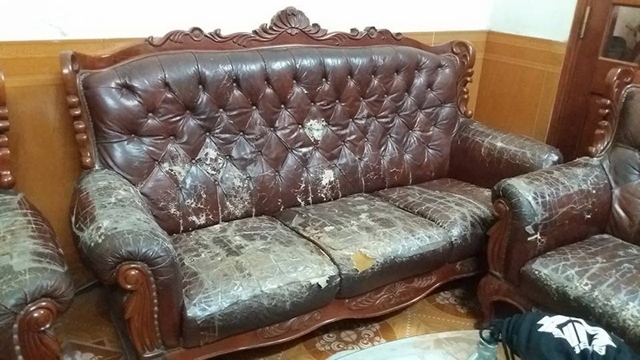
Sofa Chỉ Bị Rách
Ghế sofa được bọc bằng nệm hoặc lò xo sau khi sử dụng một thời gian sẽ bị tình trạng
xẹp
hoặc lún, mang lại cảm giác khá là khó chịu khi ngồi hoặc nằm...
Giải pháp phù hợp nhất trong trường hợp này là chúng ta cần phục hồi lò xo (Đối với
sofa
có lò xo) và bọc lại nệm cho bộ ghế sofa đó.
03
Sofa Bị Hỏng Phần Khung Ghế
Ghế sofa được bọc bằng nệm hoặc lò xo sau khi sử dụng một thời gian sẽ bị tình trạng
xẹp
hoặc lún, mang lại cảm giác khá là khó chịu khi ngồi hoặc nằm...
Giải pháp phù hợp nhất trong trường hợp này là chúng ta cần phục hồi lò xo (Đối với
sofa
có lò xo) và bọc lại nệm cho bộ ghế sofa đó.
Lưu Ý Khi Bọc Lại Ghế
Sofa
Dịch vụ bọc lại ghế sofa không chỉ đơn giản là chúng ta
giao bộ bàn ghế cho xưởng
sofa thi công bọc lại là xong. Khi đã chọn giải pháp bọc lại sofa thì chúng ta nên chú ý
một số vấn đề sau để thương lượng và hợp đồng với đơn vị cung cấp dịch vụ bọc lại.
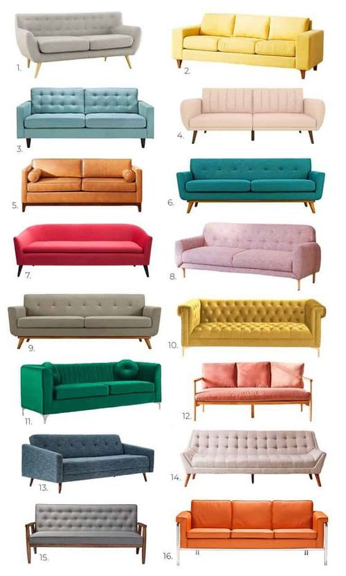
Màu Sắc Và Họa Tiết
Màu sắc, họa tiết phần áo bọc ghế là chi tiết rất quan trọng mà quý khách cần lưu
ý
chọn cho phù hợp với phong cách cũng như không gian trong phòng để tạo hiệu ứng
thẩm
mỹ, sang trọng và đẳng cấp hơn.
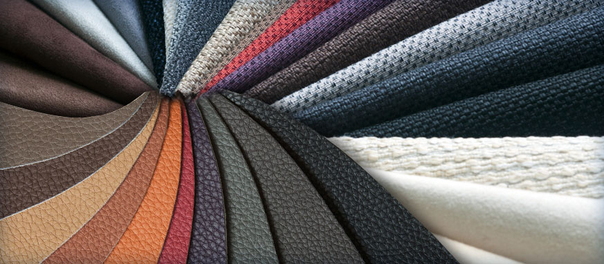
Màu Sắc Và Họa Tiết
Màu sắc, họa tiết phần áo bọc ghế là chi tiết rất quan trọng mà quý khách cần lưu
ý
chọn cho phù hợp với phong cách cũng như không gian trong phòng để tạo hiệu ứng
thẩm
mỹ, sang trọng và đẳng cấp hơn.
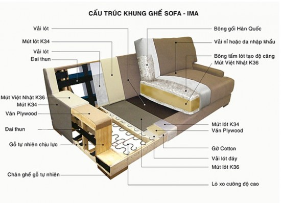
Màu Sắc Và Họa Tiết
Màu sắc, họa tiết phần áo bọc ghế là chi tiết rất quan trọng mà quý khách cần lưu
ý
chọn cho phù hợp với phong cách cũng như không gian trong phòng để tạo hiệu ứng
thẩm
mỹ, sang trọng và đẳng cấp hơn.
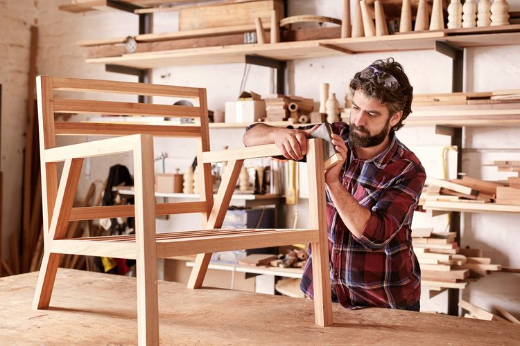
Màu Sắc Và Họa Tiết
Màu sắc, họa tiết phần áo bọc ghế là chi tiết rất quan trọng mà quý khách cần lưu
ý
chọn cho phù hợp với phong cách cũng như không gian trong phòng để tạo hiệu ứng
thẩm
mỹ, sang trọng và đẳng cấp hơn.
Chọn Chất Liệu Bọc Ghế Sofa
Chọn chất liệu là yếu tố rất quan trọng nhất khi cần bọc lại ghế
sofa.
Chất liệu bọc ghế sofa thay đổi tính thẩm mỹ của bộ ghế sofa, đồng thời cũng ảnh hưởng đến
chất
lượng, giá thi công dịch vụ, giá trị của bộ bàn ghế.
Dưới đây là một số mẫu chất liệu thường dùng để bọc ghế sofa để quý khách tham khảo hoặc lựa
chọn
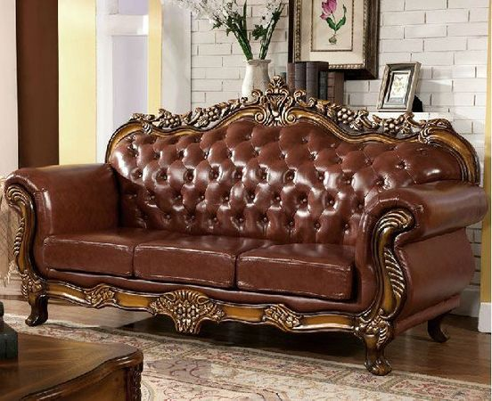
Chất Liệu Da Bò
Sử dụng da bò thật nên nhìn rất đẹp, nổi bật và sang trọng,
Da bò thật dễ dàng vệ
sinh khi sử dụng.
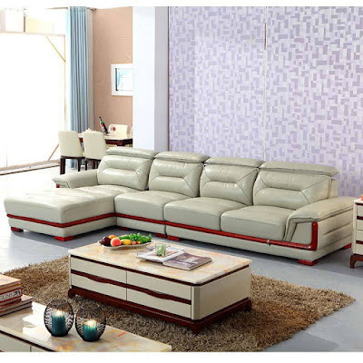
Chất Liệu Da Bò
Sử dụng da bò thật nên nhìn rất đẹp, nổi bật và sang trọng,
Da bò thật dễ dàng vệ
sinh khi sử dụng.
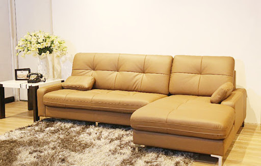
Chất Liệu Da Bò
Sử dụng da bò thật nên nhìn rất đẹp, nổi bật và sang trọng,
Da bò thật dễ dàng vệ
sinh khi sử dụng.
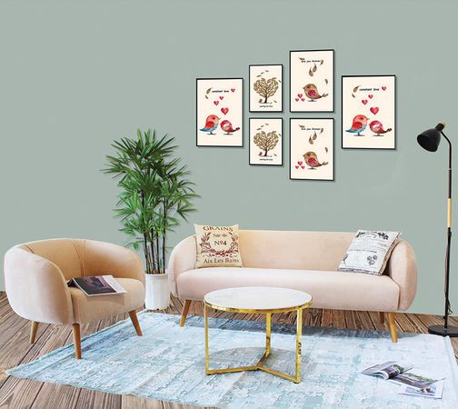
Chất Liệu Da Bò
Sử dụng da bò thật nên nhìn rất đẹp, nổi bật và sang trọng,
Da bò thật dễ dàng vệ
sinh khi sử dụng.
Dịch Vụ Bọc Ghế Tại Sofa Tại
Sofa Việt Ý
Một số dịch vụ về sofa mà Sofa Việt Ý nhận thi công cho hầu hết tất cả
khách hàng của mình.
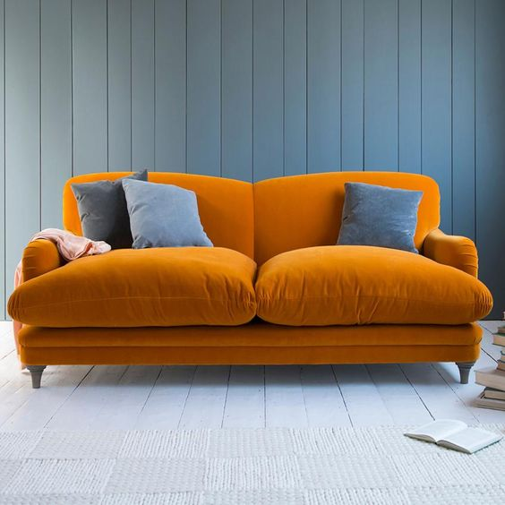
Bọc Ghế Sofa Tại Nhà
Chúng tôi sẽ đến nhà khách hàng để thi công bọc lại bộ bàn ghế sofa.
Tiếp kiệm thời gian thi công.
Miễn phí vận chuyển trong nội thành TP. Hồ Chí Minh.
Khách hàng trực tiếp quan sát quá trình thi công của Sofa Việt Ý từ lúc bắt đầu
cho đến khi hoàn thành. Ưng ý mới thanh toán.
Cam kết thi công bằng chất liệu là hàng nhập khẩu cao cấp.
Dự Án - Hình Sofa (Thực Tế) Đã
Thi Công Cho Khách Hàng
Một số dự án và hình ảnh thực tế mà Sofa Việt Ý đã thi công và bàn giao
cho khách hàng. Dưới đây là một số hình ảnh cụ thể tiêu biểu để quý khách cùng tham khảo.
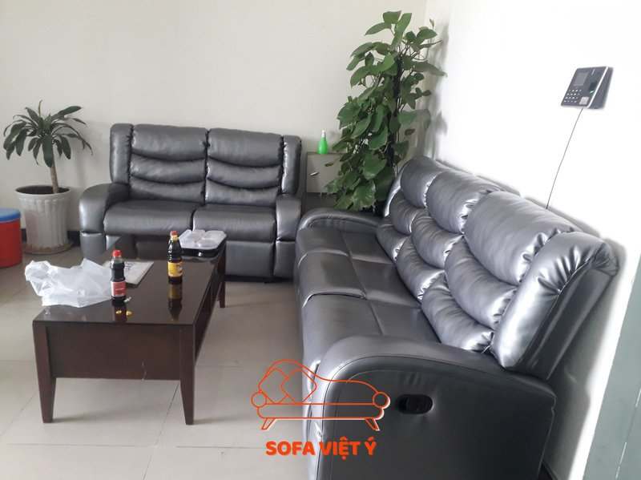
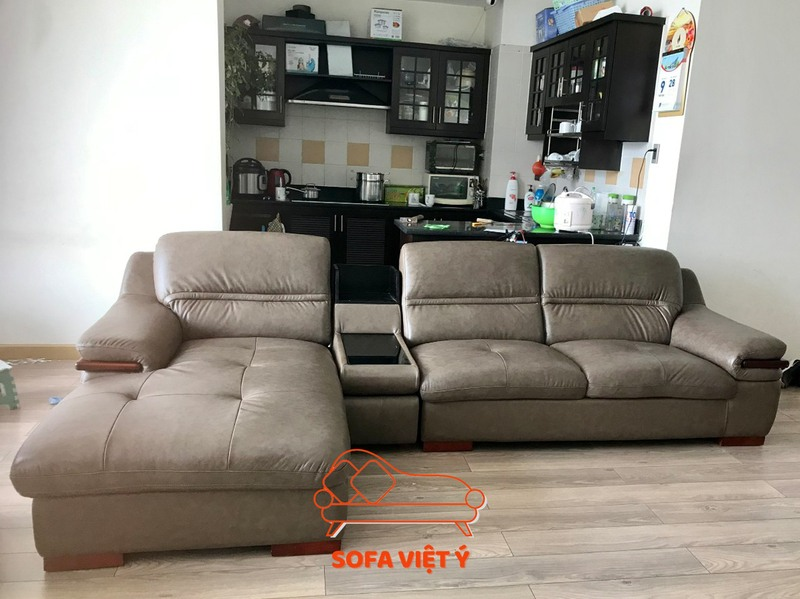
Phản Hồi Từ Khách Hàng Của Sofa Việt Ý
Một số phản hồi tiêu biểu mà khách hàng sử dụng dịch vụ bọc ghế sofa,
đóng ghế sofa, bọc nệm ghế gỗ... đánh giá về dịch vụ của Sofa Việt Ý.
Chị Đỗ Linh
Bọc Lại Da Ghế Sofa Gỗ
Chất liệu da tốt, mềm nữa, ngồi không bị nóng. Bảo hành đàng hoàng lắm nên tôi rất
yên
tâm. Hai lần tôi đều sửa và bọc lại ghế ở đây rồi. Mấy bạn nhân viên bên này nhiệt
tình
lắm.
Anh Vũ Lộc
Đóng Ghế Sofa Phòng Khách
Chất liệu da tốt, mềm nữa, ngồi không bị nóng. Bảo hành đàng hoàng lắm nên tôi rất
yên
tâm. Hai lần tôi đều sửa và bọc lại ghế ở đây rồi. Mấy bạn nhân viên bên này nhiệt
tình
lắm.
Chị Vũ Hương Anh
Bọc Lại Ghế Sofa Tại Nhà
Chất liệu da tốt, mềm nữa, ngồi không bị nóng. Bảo hành đàng hoàng lắm nên tôi rất
yên
tâm. Hai lần tôi đều sửa và bọc lại ghế ở đây rồi. Mấy bạn nhân viên bên này nhiệt
tình
lắm.
Chính Sách - Khuyến Mãi Siêu Hấp
Dẫn
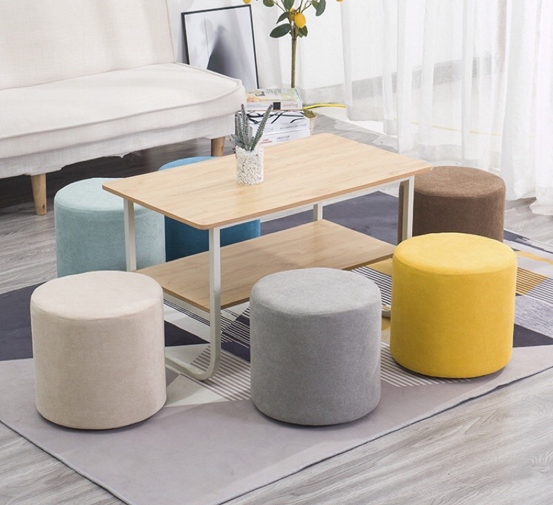
Dịch Vụ Đóng Ghế Sofa
Khi đóng mới bộ ghế sofa tại Sofa Việt Ý, Chúng tôi tặng thêm cho quý khách hàng
2 cái ghế đôn.
Khung gỗ được xử lý mối mọt, bảo hành 5 năm
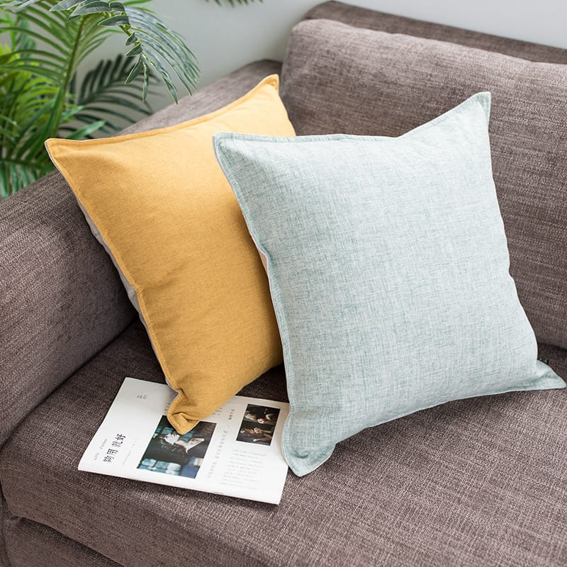
Dịch Vụ Đóng Ghế Sofa
Khi đóng mới bộ ghế sofa tại Sofa Việt Ý, Chúng tôi tặng thêm cho quý khách hàng
2 cái ghế đôn.
Khung gỗ được xử lý mối mọt, bảo hành 5 năm
Đăng Ký Tư Vấn - Báo
Giá
Để lại thông tin của bạn, nhân viên tư vấn của chúng tôi sẽ liên hệ lại trong thời
gian
sớm
nhất. Trân trọng!
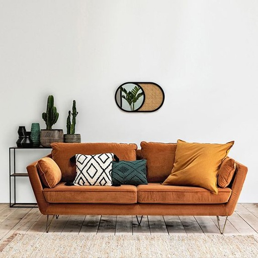
Dưới đây là một số dịch vụ mà Sofa Việt Ý cung cấp: